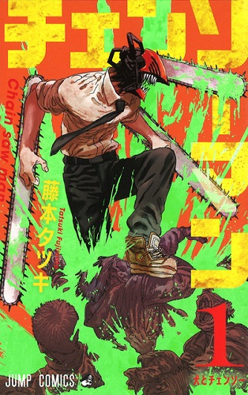

Autor: Tatsuki Fujimoto
Gênero: Ação, Aventura, Demônios, Shonen
Quando seu pai morreu, Denji ficou preso com uma dívida que era incapaz de pagar. Mas graças à ajuda de um cachorro demônio que ele salvou chamado Pochita, Denji é capaz de sobreviver como caçador de demônios de aluguel. Os poderes de serra elétrica do Pochita são bem poderosos contra estes demônios. E então, quando o Denji acaba sendo morto por um demônio, o Pochita desiste de sua vida para revivê-lo. Mas, agora o Denji renasceu como um hibrido de demônio com humano... Agora ele é o "Chainsaw Man"!!!